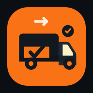
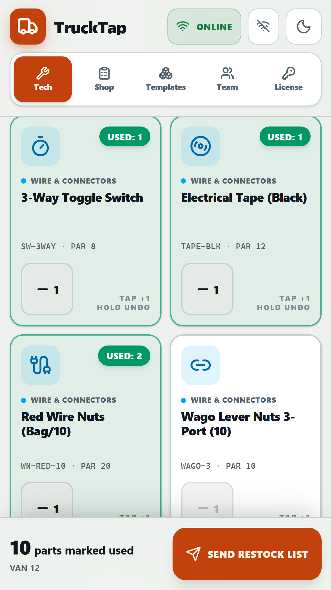
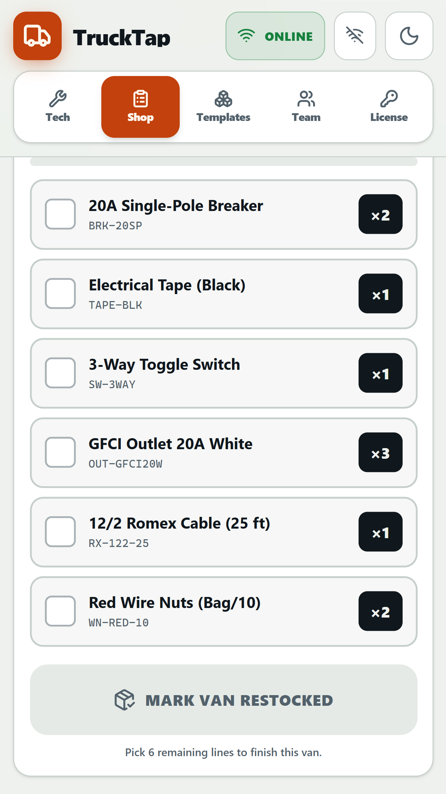

TruckTapUser guide for the van restock board.
Install TruckTap, activate your license, set up a van, tap used parts, and hand the shop a clean pick-list.


TruckTapInstall TruckTap, activate your license, set up a van, tap used parts, and hand the shop a clean pick-list.
Start here
TruckTap is a local-first restock board for service vans. A technician taps each part they used. The shop sees a live pick-list and a consolidated supplier order. Everything works offline; Team Sync is optional.
Tap +1 or -1 on a part. Hold to undo. Counts reset when the van is restocked.
See every van, pick each line, and export the supplier order as CSV.
Name your van and load an Electrical, Plumbing, or Multifamily starter list.
Optional shared workspace for the field, the shop tablet, and the office.
Step 1
TruckTap-Setup-1.1.8.exe and accept the Terms of Service
shown by the installer.
The installer also places this guide, a README, and the Terms of Service in the TruckTap program folder. Start menu shortcuts are created under TruckTap Docs.
https://trucktap.net/app/. The web app uses the same local
board and works without an account. Use the desktop app when you want a
separate window and a local data folder.
On a new device the app opens with a 14-day trial. If this is your first van, TruckTap asks you to name it and choose a starting parts list. You can skip the template and add parts manually.
| Platform | Location |
|---|---|
| Windows desktop | Use Help → Open Data Folder. IndexedDB lives in the Electron user-data folder. |
| Browser | Site data for trucktap.net in your browser profile. |
Clearing browser site data or uninstalling without a Team Sync workspace removes the local board. Export the shop list to CSV before wiping a device.
Step 2
A TAP license is signed and verified offline. Open
License & Downloads and paste the key from your
purchase email. Keys start with TAP-.
Lost the email? Open https://trucktap.net/license.html and
enter the Stripe checkout session ID from your receipt.
| Plan | Vans | Shop stations | Updates |
|---|---|---|---|
| Starter | 3 | 1 | 12 months |
| Standard | 10 | 3 | 12 months |
| Advanced | Unlimited | Unlimited | 24 months |
Licenses are per shop, not per technician. The app keeps working after the update window ends; renewals are optional.
Step 3
Open Manage. Each van has its own parts list, par levels, and tap counts. A shop can have several vans.
Starter templates cover common electrical, plumbing, and multifamily maintenance parts. They are a starting point; edit names, categories, and par levels to match your shop.

Parts are grouped by category and can be searched from the Tech view.
Daily use
Open Tech, pick the van, and tap the part you used. The count updates immediately, even with no signal.
The Tech Clicker shows the current van, categories, and tap counts.
Taps save to the device immediately. If Team Sync is on, the app queues each change and pushes it when a connection is available.
Shop workflow

The shop pick-list consolidates lines across vans for one supplier order.
From the Tech view, open the confirmation drawer and send the list. In local mode the list is available on the same device's Shop tab. With Team Sync, it appears on every connected device.
After restocking, use Clear tap counts on that van. The parts and par levels stay; only the used counts reset.
Admin
The Manage tab is the parts catalog for each van. Changes sync to connected devices when Team Sync is enabled.
Set the name, category, par level, and optional supplier note. Save to apply it to this van.
Load a trade starter list into an existing van without replacing parts already there.
Removing a van removes its local parts and history. Export any needed data first.
Use the reset action only when you intend to wipe the device's board. It cannot be undone.
The Shop view exports the current supplier order as CSV. Open it in Excel, Google Sheets, or your purchasing system. For a full backup, use Team Sync to keep a shared copy, or copy the desktop data folder while TruckTap is closed.
Optional
Team Sync connects the field, the shop tablet, and the office to one shared workspace. It is optional; local mode never requires an account.
| Role | Typical use |
|---|---|
| Owner | Billing, workspace, and member management. |
| Shop | Pick lists, restock, and supplier order. |
| Tech | Tap used parts and submit restock lists. |
The server address is configurable under Team Sync → Server settings while signed out. Use the default hosted address unless your shop runs its own server.
Keep it healthy
Download newer installers from https://trucktap.net/app.html.
Installing over an existing copy keeps local data. Update access depends on
the license window; the app continues to run after it ends.
| Problem | Try this |
|---|---|
| SmartScreen blocks the installer | Choose More info → Run anyway. |
| License will not activate | Paste the full TAP- key, including the signature after the dot. |
| Team Sync shows offline | Check the server address and internet connection. Local tapping still works. |
| Local board is empty after a browser clean-up | Restore from Team Sync, or re-import your data. Browser site data was cleared. |
| Cannot open the app after uninstalling | Reinstall from the website; license keys are not tied to the installation. |
Email support@trucktap.net with the TruckTap version, Windows version, the exact error, and your plan name. Never send a full license key in a public message.
Terms: https://trucktap.net/terms.html
Privacy: https://trucktap.net/privacy.html
Downloads: https://trucktap.net/app.html